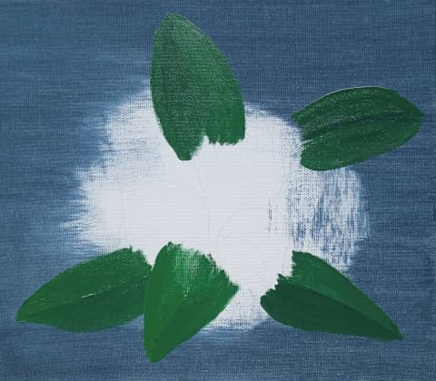
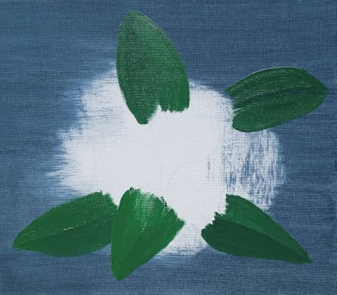
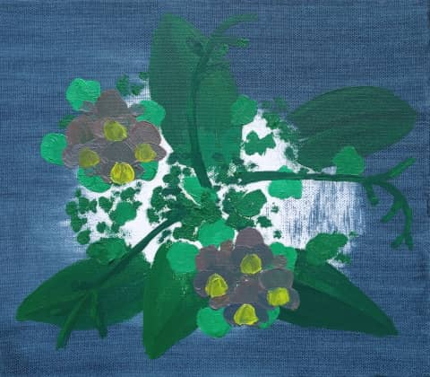
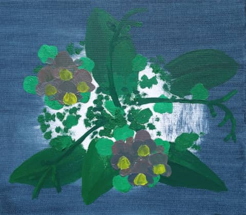
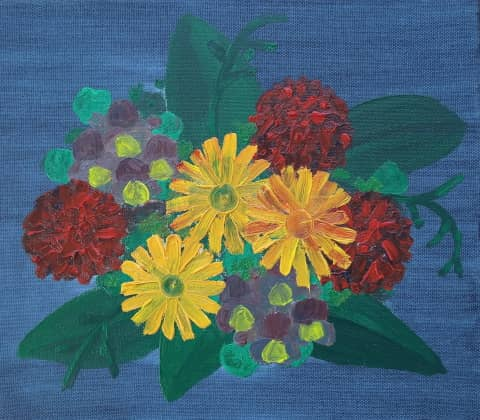
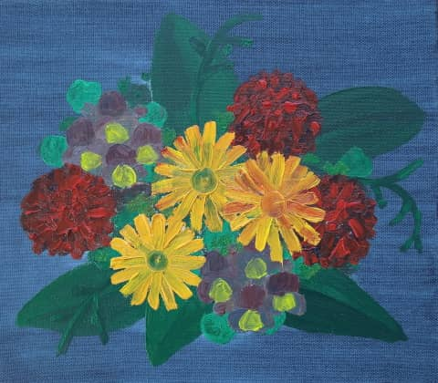

@charak
@charakÖlfarben sind eigensinnig
Schon 2023 habe ich mir ein Tuben-Set mit Ölfarbe gekauft, dazu fünf Leinwände. Viel Erfahrung beim Malen mit Öl habe ich nicht und traue mich nur langsam ran. Bislang habe ich ein abstraktes, graphisches Spektrum gemalt und mich an einem groben Porträt versucht – das aber gründlich misslungen ist (beide bei meinen Fensterbildern zu sehen). Nun also mein dritter Anlauf in Sachen Ölmalerei.
Diesmal habe ein eher einfaches Motiv gewählt, nämlich ein Arrangement verschiedener Blumen – ohne reale Vorlage, sondern im Kopf so zusammengestellt und grob mit Bleistift skizziert. Inspiriert dazu hat mich unter anderem die fünfteilige Arte-Serie „Im Rausch der Blumen“, die verschiedene Florist:innen bei ihren Projekten begleitet.
Das Schwierigste: Geduld
Wenn ich mit Wasserfarbe male, geht es verhältnismäßig schnell, bis eine Farbfläche getrocknet ist. Nach spätestens 20 Minuten kann ich mit einer neuen Farbe weitermachen, ohne dass verschiedene Schichten sich mischen oder Formen ineinander laufen. Beim Malen mit Öl brauche ich deutlich mehr Geduld.
 


 

 


Ich habe das Motiv in einzelne Elemente aufgeteilt, die ich über Tage hinweg nach und nach ergänzen konnte. Das ging beim Blumenbouquet recht gut:
Preußisch Blauer Hintergrund, darauf erstmal fünf dunkelgrüne Blätter. Nun weitere hellgrüne Blättchen und dunkle Stängel aus der Mitte heraus. Dann zwei Gruppen mit grau-blau-rosa Nebenblumen, die ein bisschen an Stiefmütterchen erinnern sollen. Diese haben im nächsten Schritt jeweils ein gelbes Kronblatt bekommen, anschließend kamen drei rote Blumenballen auf die Leinwand. Das noch leere Zentrum füllen orange-gelbe Korbblütler, deren Mitte ich im letzten Schritt braun ausgemalt habe. Dazu weiße Tupfen wie Schleierkraut, dunkle Akzente und ein paar letzte Details. Die animierte Bilderfolge zeigt die verschiedenen Phasen, zwischen denen das Bild immer wieder trocknen musste. (Den Code für die animierte Überblendung habe ich mir übrigens von Dan Klammer abgeschaut.)
Je nachdem, wie dick man die Ölfarbe aufträgt, ist sie sogar nach zwei Tagen noch zu feucht, um etwas darüber malen zu können. Zum Beispiel wollte ich in meinem Blumenbild weiße Highlights in die roten Blütenbälle setzen. Pustekuchen: Das Rot war noch nicht getrocknet und so haben sich eher rosafarbene Flecken ergeben. Nicht meine Absicht, aber akzeptabel.
Leuchtende Farben fortgemischt
In Schule und Studium hatte ich gelernt, welche Grundfarben man kombinieren muss, um einen bestimmten Farbton zu erreichen – mit Ölfarben ist das Mischen aber gar nicht so einfach. Zum Beispiel vermisse ich bei meinen Öltuben ein leuchtendes Violett, das ich gern für die kleineren Nebenblumen eingesetzt hätte. In der Theorie erhalte ich Violett, wenn ich Rot mit ein wenig Blau mische …
Wenn ich in der Praxis aber zwei Ölfarbkleckse verrühre, verlieren sie sehr schnell ihre Leuchtkraft. Der entstandene Farbton ist matt und fast immer dunkler, als ich ihn mir vorgestellt habe. Anfangs hatte ich noch den Fehler gemacht, dann wieder etwas Weiß hinzuzufügen. Dadurch wird das Ergebnis zwar heller, dabei aber noch grauer als zuvor. Ob ich beim Mischen etwas falsch mache? Vermutlich ist es einfach so, dass gemischte Ölfarben nicht so schön leuchten wie reine Farbtöne direkt aus der Tube.
Pastoser Farbauftrag
Was ich bei Ölfarbe wirklich mag, ist ihre cremige Konsistenz. Man kann sie dick wie eine Paste auftragen und hat zusätzlich zur Farbe noch eine Oberflächenstruktur. Mit etwas Geschick lässt sich das Motiv stellenweise modellieren.

Durch die Dickflüssigkeit gibt es auch die Möglichkeit, eine Stelle komplett deckend zu übermalen. Sehr praktisch, weil der Hintergrund tatsächlich wieder hinter dem Motiv verschwindet. Bei Wasserfarbe muss man mit der Hintergrundfarbe überall die Bereiche aussparen, wo später noch das Motiv hinkommt. Meistens male ich dann von vorne nach hinten und setze den Hintergrund am Schluss in die Lücken, die das Motiv übrig gelassen hat.
Ein weiterer, schöner Effekt ist ein Pinselstrich mit zwei Farben gleichzeitig, die sich untereinander nicht vollständig mischen. Das ergibt eine interessante Linie mit mehreren Schattierungen. Beim Malen mit Wasserfarbe darf man dafür die Pigmente nur mit sehr wenig Wasser anrühren; mit Ölfarbe geht das deutlich einfacher.
Kürzlich habe ich über Acrylfarbe gelesen, dass sie ähnlich cremig wie Ölfarbe sein soll, dabei aber schneller trocknet. Damit könnte ich auch mal herumexperimentieren …
---
Rubrik(en): #methodik